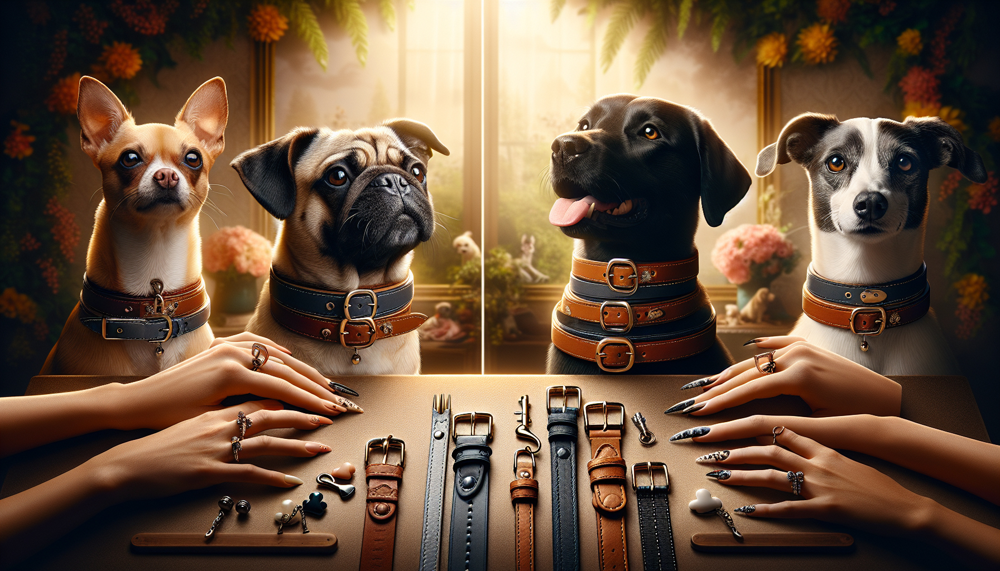

Choosing a dog collar sounds simple at first—until you realize just how many options are out there. From flat collars and martingales to leather, nylon, personalized styles, and breed-specific sizing, finding the best collar can feel surprisingly overwhelming. The good news? With a little guidance, you can pick a collar that keeps your dog safe, comfortable, and looking adorable too.
Whether you are a first-time dog owner, a devoted pet parent upgrading your pup’s gear, or a gift shopper searching for something thoughtful and practical, the right collar makes a big difference. Different breeds have different neck shapes, coat types, energy levels, and walking habits. A collar that works beautifully for a Beagle may not be ideal for a Greyhound, and a tiny collar for a Yorkie certainly will not suit a strong, enthusiastic Labrador.
In this guide, we will walk through how to choose the right dog collar for your breed, what features matter most, and how to balance function with personality. After all, your dog’s collar is one of the few accessories they wear every day—so it should fit well and feel just right.
The best dog collar starts with your dog’s physical build. Breed gives you a helpful starting point because it often predicts neck size, head shape, coat thickness, and activity level. Small breeds like Chihuahuas, Maltese, and Toy Poodles usually need lightweight collars that do not feel bulky. Medium breeds such as Cocker Spaniels, Beagles, and Border Collies often do well with standard flat collars that offer comfort and durability. Larger breeds like German Shepherds, Boxers, and Labs need stronger collars with dependable hardware.
Then there are the breeds with unique body shapes. Greyhounds, Whippets, and Salukis have narrow heads and slender necks, which means they can slip out of regular collars more easily. Bulldogs and Pugs may need collars that account for thick necks and sensitive skin folds. Long-haired breeds like Shih Tzus and Golden Retrievers benefit from materials that do not tangle or mat their fur.
Think about these breed-related factors before you buy:
Breed should guide your choice, but your individual dog matters most. Two dogs of the same breed can still need different collar styles depending on temperament and daily routine.
No matter how beautiful or durable a collar is, it will not work if the fit is wrong. A collar that is too tight can cause discomfort, rubbing, or difficulty breathing. A collar that is too loose can slip off at the worst possible moment. That is why accurate measuring is one of the most important steps in the process.
Use a soft measuring tape and measure around the base of your dog’s neck, where the collar naturally sits. Then apply the classic two-finger rule: you should be able to fit two fingers comfortably between the collar and your dog’s neck. This gives enough room for comfort without making the collar insecure.
Here are a few extra fitting tips:
If you are shopping for a gift, try to get the dog’s neck measurement from the owner or choose an adjustable collar range that offers some flexibility.
There is no one-size-fits-all collar type. The right style depends on your dog’s breed traits, behavior, and everyday activities. For many dogs, a classic flat collar is the best everyday option. It is simple, versatile, and ideal for holding ID tags. Flat collars work well for dogs that walk calmly and do not frequently slip out of gear.
Martingale collars are especially popular for breeds with narrow heads, like Greyhounds and Whippets, because they tighten slightly when the dog pulls, helping prevent escape without choking like harsher collars can. They can also be useful for timid rescue dogs who may try to back out of a standard collar.
For very small breeds or dogs with delicate necks, many owners use a collar mainly for identification and pair it with a harness for walks. This can be a great solution for brachycephalic breeds like Pugs and French Bulldogs, as well as tiny dogs who should not have extra strain on their necks.
Common collar options include:
Skip training collars or corrective styles unless recommended and demonstrated by a qualified trainer or veterinarian. Comfort and safety should always come first.
Dog collar material affects everything from comfort and durability to appearance and maintenance. Nylon collars are a favorite for many pet owners because they are lightweight, affordable, easy to clean, and available in countless colors and patterns. They are often a great match for active family dogs who love muddy trails, beach days, and everyday adventures.
Leather collars offer a timeless, elevated look and can be very durable when cared for properly. Many owners love leather for medium and large breeds because it feels sturdy and softens over time. If you are shopping for a gift, a high-quality leather or leather-look personalized collar can feel especially special.
Soft fabric or padded collars are helpful for dogs with sensitive skin, short fur, or areas prone to rubbing. Rolled leather collars can also work well for some long-haired breeds because they may be gentler on the coat.
When choosing a material, consider:
If your pup is rough-and-tumble, hardware matters too. Look for strong buckles, reinforced stitching, and secure D-rings that can stand up to daily wear.
A dog’s breed can tell you a lot about how they move through the world. Sporting and working breeds may be energetic and powerful on walks. Herding breeds may be alert and always in motion. Companion breeds may prefer gentler strolls and lots of cuddles. Choosing the right collar means thinking beyond size and style to how your dog behaves every day.
If your dog pulls hard, a collar alone may not be the most comfortable walking tool. In many cases, pairing an everyday collar with a well-fitted harness is the safest and most practical approach. The collar can hold identification, while the harness handles leash pressure. This is especially useful for puppies in training, strong pullers, and breeds prone to neck sensitivity.
Also think about visibility and safety features. Reflective stitching or bright colors can help if you walk early in the morning or after dark. Quick-release buckles can add convenience, while engraved or embroidered personalization can ensure your dog’s information stays with them even if tags fall off.
Good safety questions to ask include:
Function matters most, but let’s be honest—style is part of the fun. A dog collar is one of the easiest ways to show off your pup’s personality. Whether your dog is classic, playful, elegant, outdoorsy, or a little bit dramatic, there is a collar to match.
Color can complement your dog’s coat beautifully. Rich jewel tones look stunning on black or dark-coated dogs. Pastels can be adorable on cream or white dogs. Bold prints and bright hues are perfect for cheerful, outgoing pups. For pet owners who love thoughtful details, personalized collars add both charm and peace of mind.
Personalized dog collars are especially great because they combine style with practicality. Embroidered names, engraved buckles, or custom tags can make a collar feel unique while helping your dog get home safely if they ever wander off. They also make wonderful gifts for new puppy parents, rescue adopters, and dog lovers celebrating birthdays or gotcha days.
When shopping for a personalized collar, look for:
Even the best dog collar will not last forever. Puppies outgrow collars quickly, active dogs wear them down, and everyday use eventually takes a toll on fabric, hardware, and stitching. Checking your dog’s collar regularly is a simple habit that can prevent accidents.
Replace your dog’s collar if you notice fraying, cracked leather, stretched holes, rusted hardware, weak buckles, or faded identification. If your dog has gained or lost weight, the fit may need to be adjusted or replaced entirely. And if your dog seems uncomfortable, do not ignore it—a better material or style may solve the problem right away.
A fresh collar can also be a fun seasonal update. Many pet owners enjoy rotating collars for holidays, family photos, or special events while keeping one reliable everyday favorite in the mix.
Choosing the right dog collar for your breed is really about understanding your dog as an individual. Breed gives you useful clues, but the best collar also reflects your pup’s size, coat, behavior, daily routine, and unique personality. A good collar should be secure, comfortable, durable, and easy to wear. A great collar does all of that while looking absolutely adorable too.
Take the time to measure carefully, choose the right material, and think about how your dog actually lives day to day. Whether you have a tiny lap dog, a sleek sighthound, a fluffy family companion, or a big adventurous best friend, there is a perfect collar out there waiting for them.
Ready to find something practical, meaningful, and full of personality? Shop personalized pet products at SnoutAndAbout on Etsy.